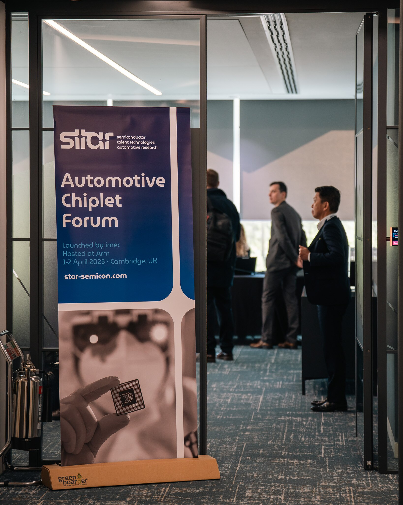

本記事は、ArmのAutomotive Products and Solutions担当Vice PresidentであるSuraj Gajendra氏と、imecのAutomotive担当Vice PresidentであるBart Placklé氏の共著である。
自動車産業は、次世代の高度なソフトウェア定義車両（SDV）へ移行するなかで、大きな変革の途上にある。この流れにより、車載の幅広い電子部品は、より少数の高性能コンピュート要素へ統合されつつある。しかし、自動車技術の急速な進化は、必要な計算能力を、資源効率とコスト効率の高い形でどう提供するかという、ますます大きな課題を生んでいる。
従来のモノリシックな半導体設計は限界に近づいている。自動運転、没入型インフォテインメント、強化されたコネクティビティへの需要が高まることで、従来型のチップアーキテクチャは限界点まで引き伸ばされている。
幸いなことに、これらの課題に対応する解決策としてチップレットがある。自動車産業では、チップレットがすでに、車載シリコン向けの革新的なシステムオンチップ（SoC）設計を可能にし、コンピュートのスケーラビリティと柔軟性を高める重要技術として台頭している。
自動車業界のリーダー企業は、チップレット統合の恩恵を受けると見込まれる次世代車両アーキテクチャへ、すでに積極的に投資している。この動きは、自動車産業における最近のトレンドや進展によって後押しされている。主な要因は次の通りである。
同時に、モノリシックチップに依存する従来型システムは、計算能力、スケーラビリティ、効率性への高まる要求に対応するのが難しくなっている。主な課題は次の通りである。
基盤となるコンピューティングの柔軟性は、自動車OEMが技術進歩に合わせて進化する個別最適なソリューションを開発できるようにし、イノベーションを促進する。2024年3月に発表されたArmのCompute Subsystems（CSS）for Automotiveは、強化されたコンピューティング能力と統合能力により、チップレットベース設計を構築するためのより速い道筋を提供する。このモジュール型アプローチにより、OEMとシリコンプロバイダーは、地域ごとの要件や進化する世界的規制に合わせて、自動車技術をカスタマイズし、スケールさせることもできる。
さらに、チップレットはエコシステムに多くの興味深いSoC設計の可能性を提供する。ArmはAutomotive Enhanced（AE）技術を通じて、パートナーが複数の再利用可能なコンポーネントをより大きな車載システムへ統合できるようにし、Armコンピュートプラットフォームの適応性とスケーラビリティを示している。
「チップレットは自動車産業の進化に対する答えであり、次世代車両の高まる要求を満たせる革新的なSoCアーキテクチャを生み出すために必要な柔軟性とスケーラビリティを提供する」 - Bart Placklé氏、imec Automotive担当Vice President。
チップレット技術の採用は、中央車載コンピュータ設計における破壊的な変化を意味する。一方で、チップレットベースのアーキテクチャへの移行は、自動車OEMが単独で取り組むには非常に高額になり得る。自動車エコシステム全体での協力を促進し、チップレットの利点を探ることを目的として、imecは2024年後半にACPを立ち上げた。この取り組みは大きな勢いを得ており、Arm、ASE、BMW Group、Bosch、Cadence Design Systems、Siemens、SiliconAuto、Synopsys、Tenstorrent、Valeoなど、自動車業界の主要企業を含むまでに拡大している。
このプログラムは、半導体ベンダー、電子設計自動化（EDA）組織、Tier 1サプライヤーを結集することで、主要な技術課題に対処し、自動車アプリケーションにおけるチップレットの実用的なユースケースを探っている。この進展は、業界が研究と探索のプリコンペティティブな段階から、自動車企業がチップレットベース設計を実践に移し始める実装段階へ移行しているという、パラダイムシフトも示している。
imecのACPは、自動車バリューチェーン全体からリソースと専門知識を集め、主要な技術課題に取り組み、高性能車載コンピューティング向けの最適なチップレットアーキテクチャを特定することで、すでに道を切り開いている。この取り組みの次のステップは、ACPの進展に基づくチップレットベースのリファレンス設計の開発である。imecはドイツのバーデン・ヴュルテンベルク州政府と提携し、ハイルブロンのInnovation Park Artificial Intelligence（IPAI）にAdvanced Chip Design Accelerator（ACDA）を立ち上げた。この新しいコンピテンスセンターは、最先端のチップレット技術、システム統合、パッケージング、AI能力の開発に重点を置き、チップレット移行を加速し、リスクを下げるためのプリコンペティティブなリファレンス設計の構築を目指す。
ACDAは、自動車分野でのチップレットベースソリューションの展開を加速し、チップレット技術のより円滑な統合と迅速な採用を確実にし、自動車メーカーのリスクと市場投入までの時間を削減するうえで重要な役割を果たす。

Armのグローバル本社であるケンブリッジで開催されたAutomotive Chiplet Forum（ACF）で、imecはACPに新しいメンバーが加わることを発表した。これは、自動車産業におけるACPとチップレット技術の勢いが高まっていることを示している。実際、自動車および半導体業界から120人以上が参加したこのイベントの重要な結論は、チップレット技術の継続的な開発と展開を加速するために、スピード感を持って動く必要があるということだった。ACPに加え、Universal Chiplet Interconnect Express（UCIe）やCSAのような業界標準は、チップレットが自動車産業全体でスケールするうえで不可欠になる。これらはArm CSS for Automotiveのような新しい実現技術の基盤となり、チップレットの開発と展開を加速する助けになる。
自動車産業は根本的な変革の入り口に立っており、チップレットはこの新しい時代の構成要素である。これは、車両がどのように構築され、カスタマイズされ、強化されるかを再定義する。チップレットが可能にする基盤的な柔軟性により、自動車メーカーは制約なくイノベーションを起こす力を持てるようになる。
自動車産業全体でチップレットを採用するまでの道のりは、共同で進める取り組みである。ACPのようなプログラムや取り組みを通じて今日形成されるパートナーシップは、明日のイノベーションを推進し、よりスマートで、より安全で、消費者の絶えず変化する要求に適応できる車両を開発していく。